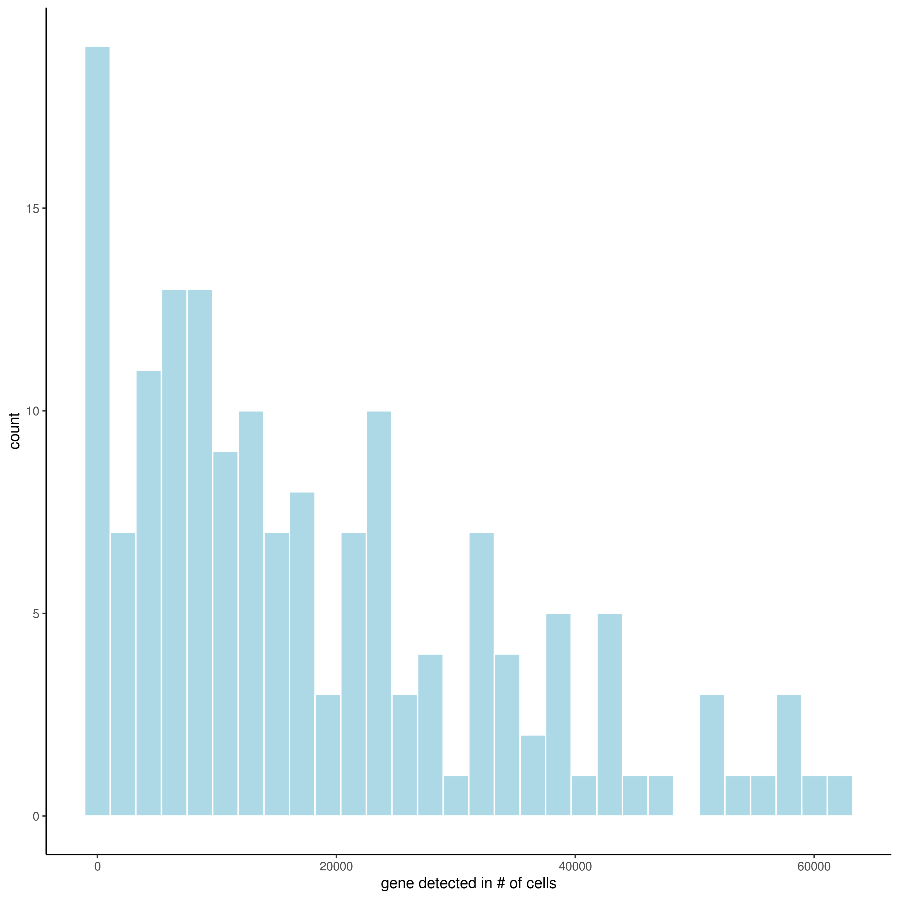
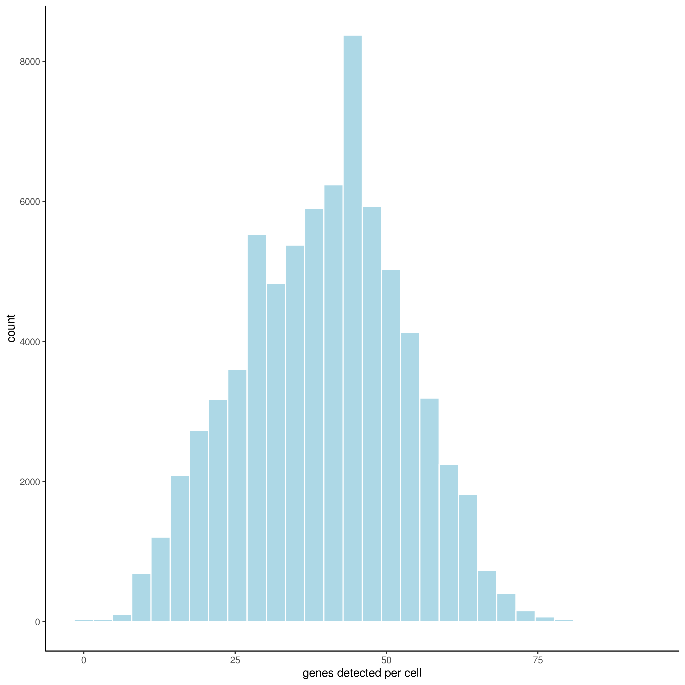
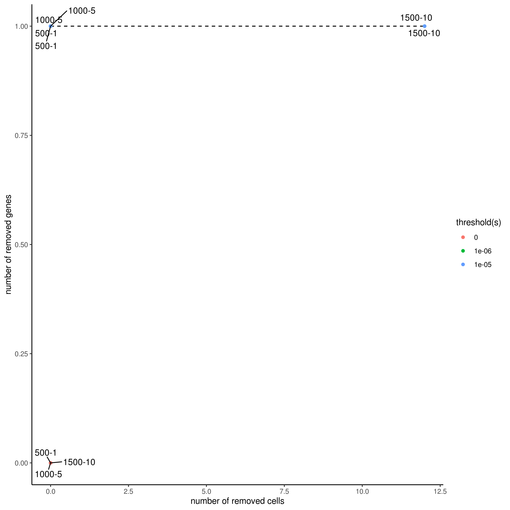
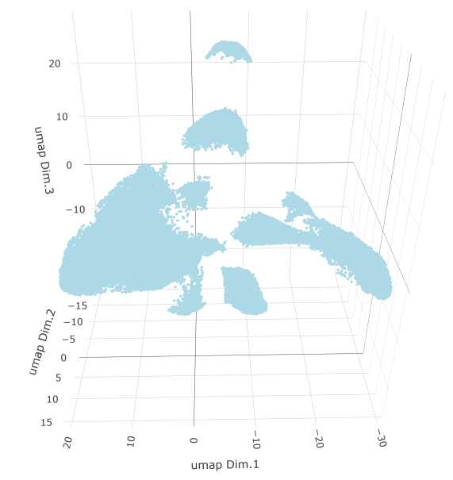
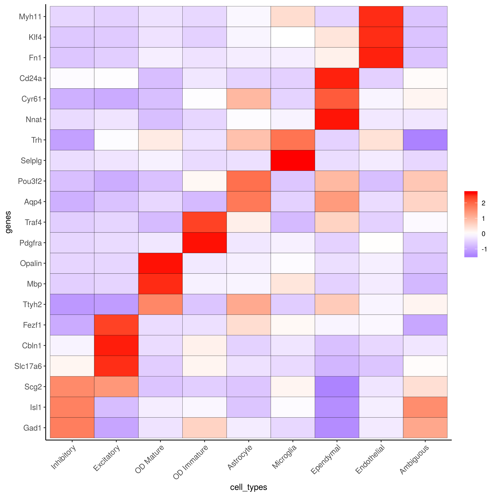
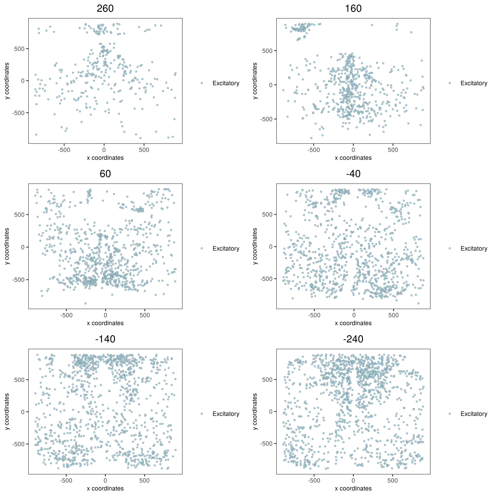
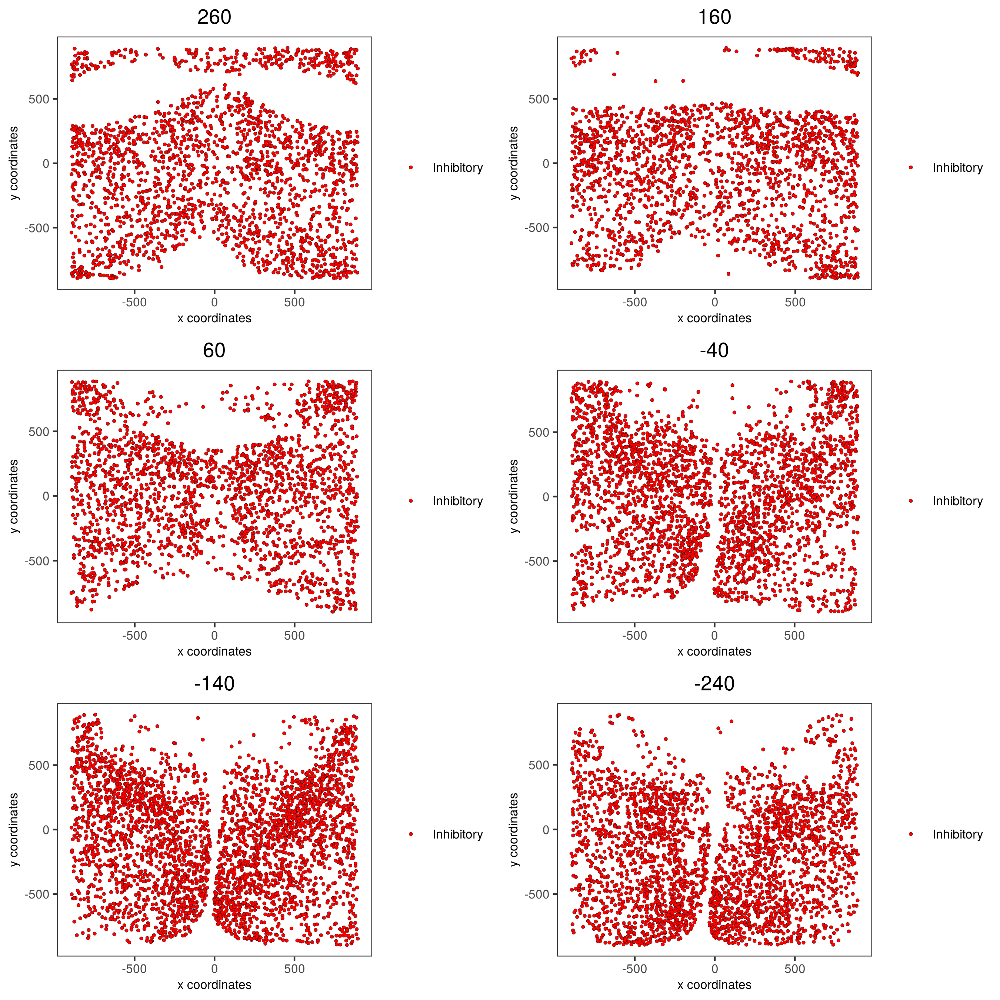
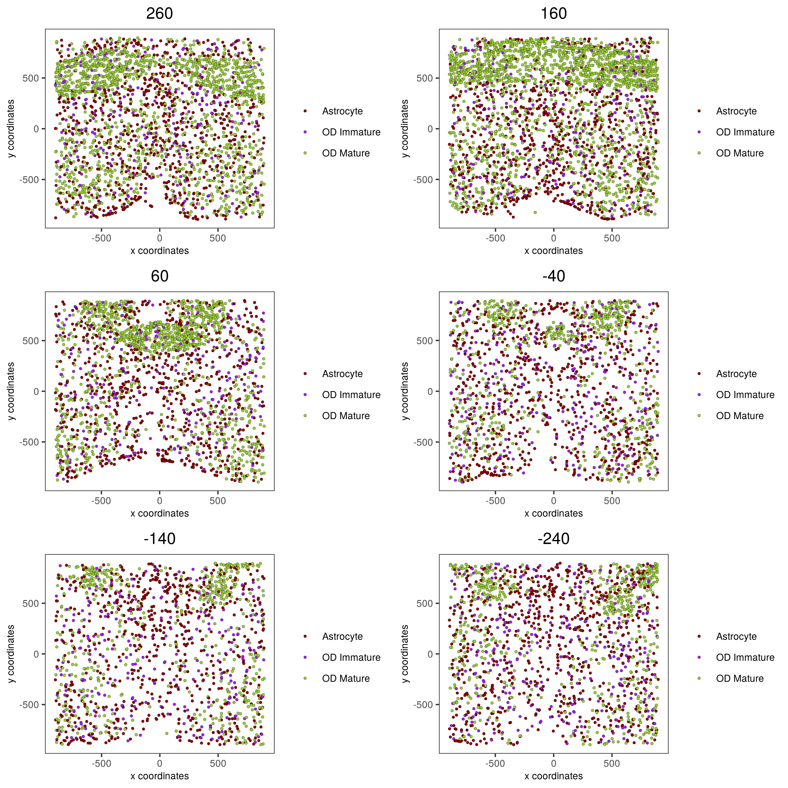
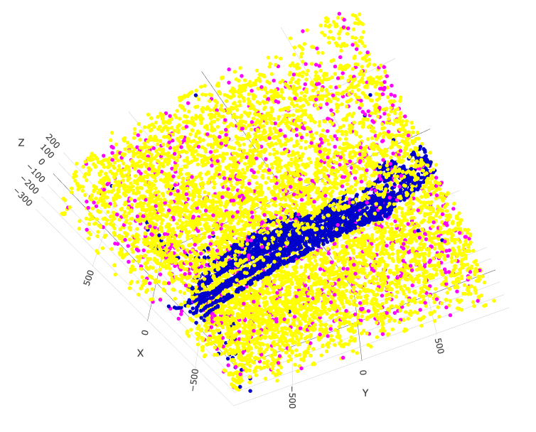
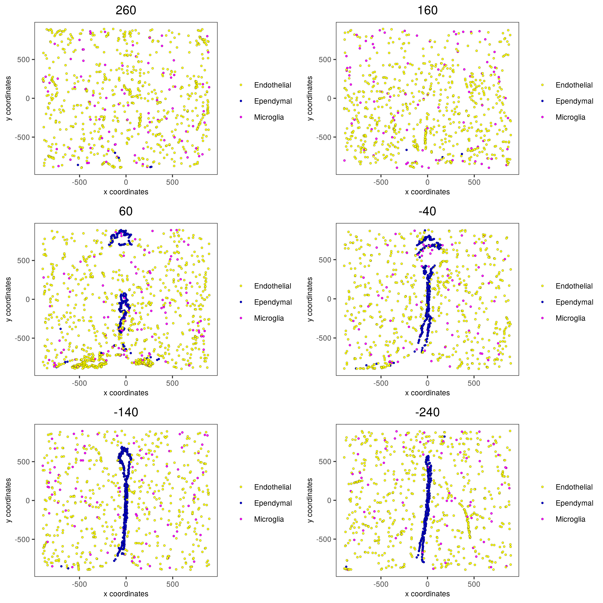

merFISH hypoth. preopt. region
Source:vignettes/mouse_merFISH_preoptic_region_200601.Rmd
mouse_merFISH_preoptic_region_200601.RmdThe merFISH data to run this tutorial can be found here
Giotto global instructions
# this example was tested with Giotto v.0.3.5 library(Giotto) ## create instructions ## instructions allow us to: ## - automatically save all plots into a chosen results folder, see also showSaveParameters() ## - set your own python path if preferred ## By default Giotto will automatically (after prompting permission) create a miniconda environment ## with all python modules the first time you run it. instrs = createGiottoInstructions(save_dir = '/your/results/path/', save_plot = T)
part 1: Data input
Moffitt et al. created a 3D spatial expression dataset consisting of 155 genes from ~1 million single cells acquired over the mouse hypothalamic preoptic regions.
data_dir = 'path/to/merFISH_data/' expr = readExprMatrix(paste0(data_dir, '/', 'count_matrix/merFISH_3D_data_expression.txt')) cell_loc = data.table::fread(paste0(data_dir, '/', 'cell_locations/merFISH_3D_data_cell_locations.txt'),select = 2:4) cell_type = data.table::fread(paste0(data_dir, '/', 'cell_types/merFISH_3D_data_cell_types.txt'), select = 2)
part 2: Create Giotto object & process data
## 2. Create & Process Giotto #### merFISH_test <- createGiottoObject(raw_exprs = expr, spatial_locs = cell_loc, instructions = instrs) # add layer information layer_ID = cell_loc$z merFISH_test = addCellMetadata(merFISH_test, new_metadata = layer_ID) annot = cell_type$x merFISH_test = addCellMetadata(merFISH_test, new_metadata = annot) ## filter raw data # 1. pre-test filter parameters filterDistributions(merFISH_test, detection = 'genes')

filterDistributions(merFISH_test, detection = 'cells')

filterCombinations(merFISH_test, expression_thresholds = c(0,1e-6,1e-5), gene_det_in_min_cells = c(500, 1000, 1500), min_det_genes_per_cell = c(1, 5, 10))

# 2. filter data merFISH_test <- filterGiotto(gobject = merFISH_test, gene_det_in_min_cells = 0, min_det_genes_per_cell = 0) ## normalize merFISH_test <- normalizeGiotto(gobject = merFISH_test, scalefactor = 10000, verbose = T) merFISH_test <- addStatistics(gobject = merFISH_test) merFISH_test <- adjustGiottoMatrix(gobject = merFISH_test, expression_values = c('normalized'), batch_columns = NULL, covariate_columns = c('nr_genes', 'total_expr'), return_gobject = TRUE, update_slot = c('custom')) # save according to giotto instructions # 2D spatPlot(gobject = merFISH_test, point_size = 1.5, save_param = list(save_name = '2_spatial_locations2D'))

# 3D spatPlot3D(gobject = merFISH_test, point_size = 2.0, axis_scale = 'real', save_param = list(save_name = '2_spatial_locations3D'))

part 3: dimension reduction
# only 155 genes, use them all (default) merFISH_test <- runPCA(gobject = merFISH_test, genes_to_use = NULL, scale_unit = F, center = F) screePlot(merFISH_test, save_param = list(save_name = '3_a_screeplot'))
merFISH_test <- runUMAP(merFISH_test, dimensions_to_use = 1:8, n_components = 3, n_threads = 4) plotUMAP_3D(gobject = merFISH_test, point_size = 1.5, save_param = list(save_name = '3_UMAP_reduction'))

part 4: cluster
## sNN network (default) merFISH_test <- createNearestNetwork(gobject = merFISH_test, dimensions_to_use = 1:8, k = 15) ## Leiden clustering merFISH_test <- doLeidenCluster(gobject = merFISH_test, resolution = 0.2, n_iterations = 100, name = 'leiden_0.2') plotUMAP_3D(gobject = merFISH_test, cell_color = 'leiden_0.2', point_size = 1.5, show_center_label = F, save_param = list(save_name = '4_UMAP_leiden'))

part 5: co-visualize
spatDimPlot3D(gobject = merFISH_test, show_center_label = F, cell_color = 'leiden_0.2', dim3_to_use = 3, axis_scale = 'real', spatial_point_size = 2.0, save_param = list(save_name = '5_covis_leiden'))

spatPlot2D(gobject = merFISH_test, point_size = 1.5, cell_color = 'leiden_0.2', group_by = 'layer_ID', cow_n_col = 2, group_by_subset = c(seq(1, 12, 2)), save_param = list(save_name = '5_leiden_2D'))

part 6: cell type marker gene detection
markers = findMarkers_one_vs_all(gobject = merFISH_test, method = 'gini', expression_values = 'normalized', cluster_column = 'leiden_0.2', min_genes = 1, rank_score = 2) markers[, head(.SD, 2), by = 'cluster'] # violinplot topgini_genes = unique(markers[, head(.SD, 2), by = 'cluster']$genes) violinPlot(merFISH_test, genes = topgini_genes, cluster_column = 'leiden_0.2', strip_position = 'right', save_param = c(save_name = '6_violinplot'))

part 7: cell-type annotation
Annotation
# known markers and DEGs selected_genes = c('Myh11', 'Klf4', 'Fn1', 'Cd24a', 'Cyr61', 'Nnat', 'Trh', 'Selplg', 'Pou3f2', 'Aqp4', 'Traf4', 'Pdgfra', 'Opalin', 'Mbp', 'Ttyh2', 'Fezf1', 'Cbln1', 'Slc17a6', 'Scg2', 'Isl1', 'Gad1') cluster_order = c(1, 2, 3, 5, 7, 8, 4, 9, 12, 10, 11, 6) plotMetaDataHeatmap(merFISH_test, expression_values = 'scaled', metadata_cols = c('leiden_0.2'), selected_genes = selected_genes, custom_gene_order = rev(selected_genes), custom_cluster_order = cluster_order, save_param = c(save_name = '7_clusterheatmap_markers'))

## name clusters clusters_cell_types_hypo = c('Inhibitory', 'Inhibitory', 'Excitatory','OD Mature','OD Mature', 'OD Immature', 'Astrocyte', 'Astrocyte', 'Microglia', 'Ependymal', 'Endothelial','Endothelial') names(clusters_cell_types_hypo) = as.character(cluster_order) merFISH_test = annotateGiotto(gobject = merFISH_test, annotation_vector = clusters_cell_types_hypo, cluster_column = 'leiden_0.2', name = 'cell_types') ## show heatmap plotMetaDataHeatmap(merFISH_test, expression_values = 'scaled', metadata_cols = c('cell_types'), selected_genes = selected_genes, custom_gene_order = rev(selected_genes), custom_cluster_order = clusters_cell_types_hypo, save_param = c(save_name = '7_clusterheatmap_markers_celltypes'))

Visualization
## visualize ## mycolorcode = c('red', 'lightblue', 'yellowgreen','purple', 'darkred', 'magenta', 'mediumblue', 'yellow', 'gray') names(mycolorcode) = c('Inhibitory', 'Excitatory','OD Mature', 'OD Immature', 'Astrocyte', 'Microglia', 'Ependymal','Endothelial', 'Ambiguous') plotUMAP_3D(merFISH_test, cell_color = 'cell_types', point_size = 1.5, cell_color_code = mycolorcode, save_param = c(save_name = '7_umap_cell_types'))

spatPlot3D(merFISH_test, cell_color = 'cell_types', axis_scale = 'real', sdimx = 'sdimx', sdimy = 'sdimy', sdimz = 'sdimz', show_grid = F, cell_color_code = mycolorcode, save_param = c(save_name = '7_spatPlot_cell_types_all'))

spatPlot2D(gobject = merFISH_test, point_size = 1.0, cell_color = 'cell_types', cell_color_code = mycolorcode, group_by = 'layer_ID', cow_n_col = 2, group_by_subset = c(seq(260, -290, -100)), save_param = c(save_name = '7_spatPlot2D_cell_types_all'))

Excitatory cells only
spatPlot3D(merFISH_test, cell_color = 'cell_types', axis_scale = 'real', sdimx = 'sdimx', sdimy = 'sdimy', sdimz = 'sdimz', show_grid = F, cell_color_code = mycolorcode, select_cell_groups = 'Excitatory', show_other_cells = F, save_param = c(save_name = '7_spatPlot_cell_types_excit'))

spatPlot2D(gobject = merFISH_test, point_size = 1.0, cell_color = 'cell_types', cell_color_code = mycolorcode, select_cell_groups = 'Excitatory', show_other_cells = F, group_by = 'layer_ID', cow_n_col = 2, group_by_subset = c(seq(260, -290, -100)), save_param = c(save_name = '7_spatPlot2D_cell_types_excit'))

Inhibitory cells only
# inhibitory spatPlot3D(merFISH_test, cell_color = 'cell_types', axis_scale = 'real', sdimx = 'sdimx', sdimy = 'sdimy', sdimz = 'sdimz', show_grid = F, cell_color_code = mycolorcode, select_cell_groups = 'Inhibitory', show_other_cells = F, save_param = c(save_name = '7_spatPlot_cell_types_inhib'))

spatPlot2D(gobject = merFISH_test, point_size = 1.0, cell_color = 'cell_types', cell_color_code = mycolorcode, select_cell_groups = 'Inhibitory', show_other_cells = F, group_by = 'layer_ID', cow_n_col = 2, group_by_subset = c(seq(260, -290, -100)), save_param = c(save_name = '7_spatPlot2D_cell_types_inhib'))

OD and astrocytes only
spatPlot3D(merFISH_test, cell_color = 'cell_types', axis_scale = 'real', sdimx = 'sdimx', sdimy = 'sdimy', sdimz = 'sdimz', show_grid = F, cell_color_code = mycolorcode, select_cell_groups = c('Astrocyte', 'OD Mature', 'OD Immature'), show_other_cells = F, save_param = c(save_name = '7_spatPlot_cell_types_ODandAstro'))

spatPlot2D(gobject = merFISH_test, point_size = 1.0, cell_color = 'cell_types', cell_color_code = mycolorcode, select_cell_groups = c('Astrocyte', 'OD Mature', 'OD Immature'), show_other_cells = F, group_by = 'layer_ID', cow_n_col = 2, group_by_subset = c(seq(260, -290, -100)), save_param = c(save_name = '7_spatPlot2D_cell_types_ODandAstro'))

Other cells only
spatPlot3D(merFISH_test, cell_color = 'cell_types', axis_scale = 'real', sdimx = 'sdimx', sdimy = 'sdimy', sdimz = 'sdimz', show_grid = F, cell_color_code = mycolorcode, select_cell_groups = c('Microglia', 'Ependymal', 'Endothelial'), show_other_cells = F, save_param = c(save_name = '7_spatPlot_cell_types_other'))

spatPlot2D(gobject = merFISH_test, point_size = 1.0, cell_color = 'cell_types', cell_color_code = mycolorcode, select_cell_groups = c('Microglia', 'Ependymal', 'Endothelial'), show_other_cells = F, group_by = 'layer_ID', cow_n_col = 2, group_by_subset = c(seq(260, -290, -100)), save_param = c(save_name = '7_spatPlot2D_cell_types_other'))
